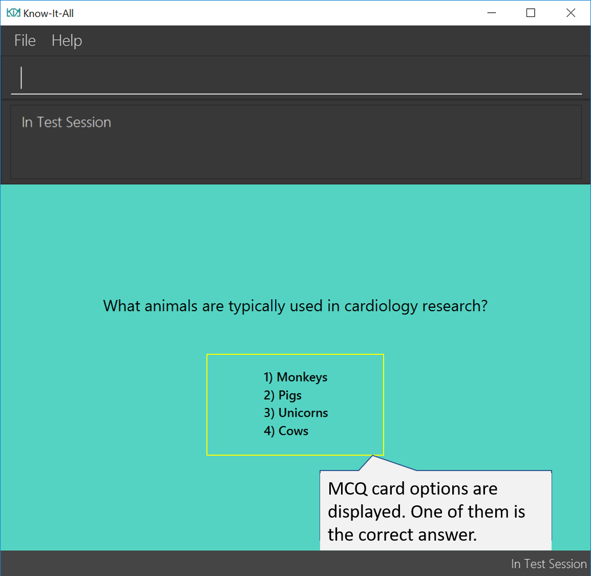
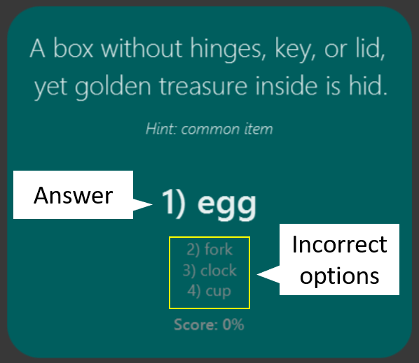
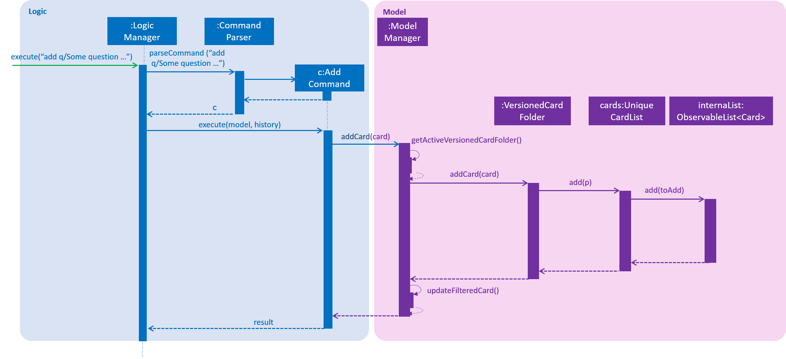

Overview
Know-It-All is a flashcard application developed as a software engineering project by a team of 5, including myself. The base application was originally an addressbook application, and my team was given the choice of either enhancing its current features, or morphing the application to suit a different purpose. We chose the latter path, which resulted in the current iteration of Know-It-All.
Our application aims to assist students in their learning by proving them with an easy-to-use digital flashcard management system to create and review their own flashcards. Through components such as the in-built test session and report feature, users can learn more effectively and review their performance. Interaction is primarily done via a CLI, and it has a GUI created with JavaFX. It is written in Java, and has about 10 kLoC.
My role involved the restructuring of the model and logic components of the original addressbook application, as well as implementing flashcard creation and management for Know-It-All. A more detailed breakdown of my contributions are detailed below, together with my additions to the user and developer guides.
Lookout for the following icons and formatting used throughout the document for your reference:
| Important information that should be noted. |
| Useful tips that can help if you get stuck. |
test: Command to be executed or less commonly, a component, class or object in the architecture of the application.
Useful information for a deeper understanding of the command.
Summary of Contributions
The section below shows a summary of my coding, documentation and other helpful contributions to the team project.
-
Major enhancement: I implemented flashcard creation and management
-
What it does: Allows users to create, edit and delete different kinds of flashcards.
-
Justification: This is a core feature of the project, as users will be spending a large portion of their time interacting with the flashcards they have created or imported.
-
Highlights:
-
Users can create 2 different types of flashcards, Single-answer cards and MCQ cards. This provides greater versatility in how users choose to structure their learning material through the flashcards.
-
Users can easily convert between both types of cards by simply adding or removing MCQ options.
-
Users have the option to include a hint for each flashcard.
-
-
-
Minor enhancement: I implemented testing for MCQ cards
-
What it does: For MCQ card tests, users can input a number corresponding to the options available for an MCQ card, instead of having to input the entire answer.
-
Justification: This provides greater flexibility in the way users can interact with test sessions. It also reduces the need for users to type in long answers for MCQ questions, where the risk of spelling errors might needlessly impact their score for the card.
-
Highlights: MCQ card options are randomized every time the card is tested, thus preventing users from simply memorizing the correct option number.
-
-
Minor enhancement: I updated UI display for cards within card folders and for tests
-
What it does: Changed the display of the side panel for cards within card folders to display all card information to the user.
-
Justification:
-
For card folders, the side panel shows users all necessary information of a card at a glance whenever users select a card.

-
For test sessions, only relevant information is shown at the start for each card. The correct answer is displayed only after a user inputs an answer.

-
-
Highlights:
-
In a test session, the card color changes to reflect if a user has answered correctly or not. Green signifies a correct answer, while red signifies a wrong answer.
-
-
-
Code contributed: [Collated code]
-
Other contributions:
-
Enhancements to existing features:
-
Community:
-
Contributions to the User Guide
As development of Know-It-All progressed, our team had to concurrently update the User Guide to reflect the changes and new features that we implemented. The section below lists several key excerpts from the User Guide that I contributed to, and showcases my ability to write technical documentation. These include the sections on adding cards and editing cards. |
Adding a flashcard : add
Adds a flashcard to the current folder. Know-It-All supports 2 types of flashcards: Single answer cards and MCQ cards.
Format (Single answer): add q/QUESTION a/ANSWER [h/HINT]
Results in the following card:

Format (MCQ): add q/QUESTION a/ANSWER [i/INCORRECT_OPTION]… [h/HINT]
Results in the following card:

-
The question, answer, incorrect option, and hint fields can take any character, but cannot be blank.
-
Each question, answer, incorrect option and hint must be 256 characters or less (including spaces).
-
A card can have at most 1 hint (including 0).
-
A card can have at most 3 incorrect options to denote an MCQ card.
-
A card with 0 incorrect options will automatically be denoted as a Single answer card.
Examples:
-
add q/Hello? a/World -
add q/The cat _ on the mat a/sat h/poetry -
add q/What is the powerhouse of the cell? a/mitochondria i/cell wall i/nucleus h/biology
Adding Fill-In-The-Blanks style card Coming in v2.0
Allows you to add a card with blanks for multiple answers to be given during a test session. Questions for such cards would include underscores "_", each signifying a blank to be filled with an answer.
Format: `add q/QUESTION_WITH_BLANKS a/ANSWER_1/ANSWER_2/ANSWER_3…
Example:
add q/The quick brown _ jumps over the lazy _. a/fox/dog
Adding images to cards Coming in v2.0
Allows you to add images to cards to supplement the text content of the card.
Format: add q/QUESTION a/ANSWER [img/IMAGE_FILE_PATH]…
Example:
add q/Hello? a/World img/diagram.jpg
Editing a flashcard : edit
Edits the flashcard specified by the index in the current folder.
Format: edit INDEX [q/QUESTION] [a/ANSWER] [h/HINT]
-
Edits the card at the specified
INDEX. The index refers to the index number shown in the displayed card list. The index must be a positive integer 1, 2, 3, … -
At least one of the optional fields must be provided.
-
Existing values will be updated to the input values.
-
(MCQ cards) When editing incorrect options, the existing incorrect options of the card will be removed i.e adding of options is not cumulative.
-
You can remove the card’s hint by typing
h/without specifying any hint after it. -
You can remove the card’s incorrect options by typing
i/without specifying any incorrect option after it.
Examples:
-
edit 1 a/Skin h/
Edits the answer of the 1st card to be 'Skin' and removes the hint associated, if any. -
edit 2 h/history q/Who discovered Penicillin? a/Alexander Fleming
Edits the hint, question and answer of the 2nd card respectively. -
edit 3 h/cells h/biology h/organs
Replaces the hint of the current card with "organs" only.
Contributions to the Developer Guide
Our team also updated the Developer Guide to reflect the new changes and enhancements made for Know-It-All. As with the section on Contributions to the User Guide, some key excerpts of my contributions to the Developer Guide are detailed below. These include sections on Cards, Card Use Cases, and the Glossary. |
Cards
Current Implementation
The Card is one of the core aspects of the application. Cards are the result of morphing the Person class from the original AddressBook model. This implementation incorporates the Model and Logic components.
Model
To allow users to manage Cards, the following methods are available via the Model component:
-
ModelManager#addCard(Card card)- Adds a new card to the currently activeVersionedCardFolderfolder -
ModelManager#setCard(Card target, Card editedCard)- Edits the information of a target card in the currently active folder -
ModelManager#deleteCard(Card target)- Deletes the target card from the currently active folder -
ModelManager#hasCard(Card card)- Checks if a card is already present in the currently active folder
Logic
As with all other commands, the LogicManager#execute(String commandText) method of the Logic component parses the user’s input, say a command to add a new card, and executes the corresponding Command.
Example Usage
The following steps detail the underlying logic executed when a user does a card-related operation, say an add card operation.
-
User is in the
Organsfolder and wants to add a new card, with question 'What is the largest organ?' and answer 'Skin'. This is done by typingadd q/What is the largest organ? a/Skin.
-
The command parser reads the string input (as entered by the user) and returns the corresponding
Command, anAddCommandobject in this instance. -
Upon execution, the
AddCommandchecks if the card to be added is already present in the current folder. If so, an exception is thrown. -
The
AddCommandthen calls theModelManager#addCard(Card card)method. -
The new card will then be added to the active
VersionedCardFolder. -
If the user is not inside a folder, or if the card to add already exists inside the current folder, the
addCommandwill throw aCommandException.
The following sequence diagram demonstrates how AddCommand works.

Design Considerations
Aspect: How to represent options for MCQ cards
-
Alternative 1 (current choice): Maintain a set of
Optionobjects to represent incorrect options, separate from theAnswerfield of eachCard.-
Pros: Simple to implement, easy to convert the card type between MCQ and Single-answer, requires the least amount of implementation changes to
Card. -
Cons: Single-answer cards still have to maintain an empty
Optionset.
-
-
Alternative 2: Maintain 2 separate subclasses of
Card, one for Single-answer and another for MCQ.-
Pros: More object-oriented implementation.
-
Cons: Harder to implement.
-
Card Use Cases
UC02 Add flashcards
MSS
-
Student navigates to a folder that he wants to add a flashcard to.
-
Student inputs question and answer to be stored as flashcard.
-
System stores the details as a flashcard under the current folder.
Use case ends
Extensions
-
2a. Student only inputs a question but no answer.
-
2a1. System displays an error message informing the user that the command format is invalid.
Use case resumes from step 2.
-
UC03 Edit flashcard question
MSS
-
Student navigates to the folder that contains the flashcard to be edited.
-
Student indicates the card to be edited, as well as the new question.
-
System stores the updated details for the edited card.
Use case ends
Extensions
-
2a. Student enters a blank as the desired question.
-
2a1. System displays an error message informing the user that the question cannot be a blank.
Use case resumes from step 2.
-
-
2b. Student enters a card index that does not exist.
-
2b1. System displays an error message prompting the user to choose a valid card index.
Use case resumes from step 2.
-
Glossary
Card Score: The number of correct answers divided by the number of attempts for a single card. When the user is tested on a card, this number is automatically calculated and recorded.
Flashcard/Card: An object containing a single question and answer, and optionally, hints. There are 2 types of cards, Single-answer and MCQ. MCQ cards feature incorrect options in addition to the card answer, while Single-answer cards do not.
Folder Score: The average of all card scores in a folder after a test session. This number is automatically recorded after each test session.